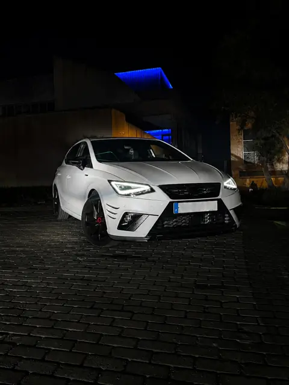
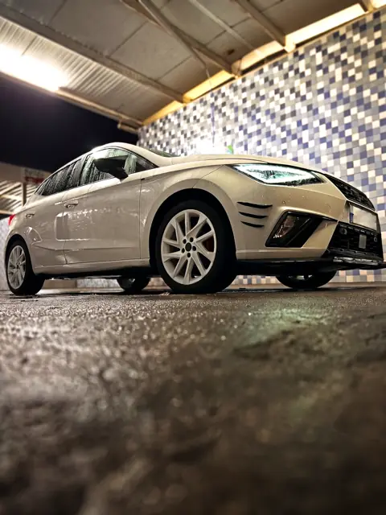
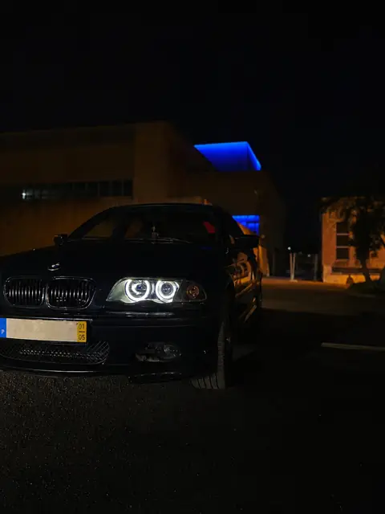
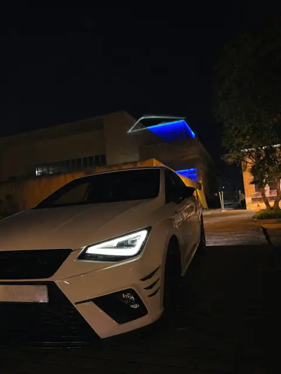
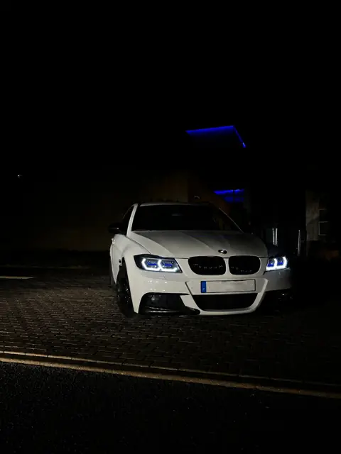
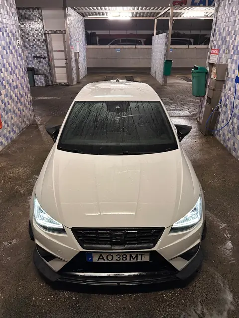
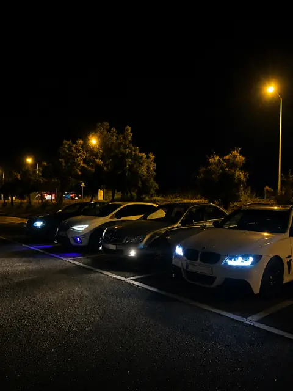

RISICCO / 01NOCTURNE / 01LUZ & CONTRASTER / 002ARQUIVO VISUAL
CRIAÇÃO EXPERIMENTALPORTFÓLIO.
Uma coleção de possibilidades. Os conceitos nesta versão são demonstrações visuais, não projetos de clientes.
EXPLORA ↓00 / GALERIA EXPERIMENTALIMAGENS EM
IMAGENS EM
ÓRBITA.
Fotografias fornecidas para o projeto, apresentadas numa galeria espacial. Usa as setas ou arrasta para explorar — seleciona uma imagem para a ampliar.

RISICCO / 02PERSPECTIVE / 02LINHAS & TEXTURAS
RISICCO / 03AFTER HOURS / 03VOLUMES NOTURNOS
RISICCO / 04CITY LIGHTS / 04COR & REFLEXOS
RISICCO / 05MIDNIGHT / 05SILHUETA & LUZ
RISICCO / 06CLEAN FRAME / 06COMPOSIÇÃO & ESPAÇO
RISICCO / 07BLUE HOUR / 07NARRATIVA VISUALESTUDOS VISUAIS / DEMONSTRAÇÃODRAG TO EXPLORE / 2026
* Peças de demonstração conceptual. Este portefólio será substituído por trabalho real, com autorização dos respetivos clientes.